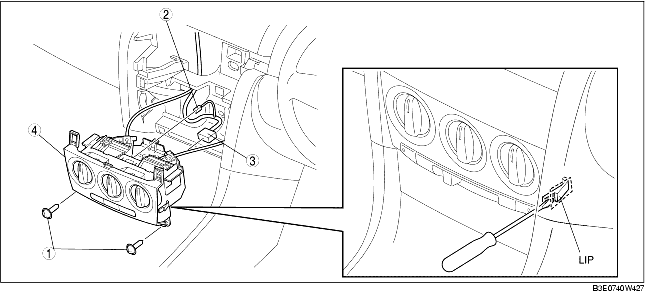

VERWIJDEREN AIRCOMODULE [HANDBEDIENDE AIRCONDITIONING]
B3E074061190W02
1. Neem de minkabel van de accu los.
2. Verwijder de volgende onderdelen:
-
(1) Asbakpaneel (Zie VERWIJDEREN/PLAATSEN MIDDENCONSOLE.)
-
(2) Maak de handgreep van de motorkapontgrendeling los van het onderpaneel. (Zie VERWIJDEREN/PLAATSEN MOTORKAPSLOT EN HANDGREEP MOTORKAPONTGRENDELING [LHD].) (Zie VERWIJDEREN/PLAATSEN MOTORKAPSLOT EN HANDGREEP MOTORKAPONTGRENDELING [RHD].)
-
(3) Dorpellijst vóór (Zie VERWIJDEREN/PLAATSEN DORPELLIJST VOOR.)
-
(4) Zijpaneel vóór (Zie VERWIJDEREN/PLAATSEN ZIJPANEEL VOOR.)
-
(5) Onderpaneel (Zie VERWIJDEREN/PLAATSEN ONDERPANEEL.)
-
(6) Dorpellijst vóór (rechts) (Zie VERWIJDEREN/PLAATSEN DORPELLIJST VOOR.)
-
(7) Zijpaneel vóór (rechts) (Zie VERWIJDEREN/PLAATSEN ZIJPANEEL VOOR.)
-
(8) Sierlijst (Zie VERWIJDEREN/PLAATSEN SIERLIJST.)
-
(9) Dashboardkastje (Zie VERWIJDEREN/PLAATSEN DASHBOARDKASTJE.)
-
(10) Verbindingsblok passagierszijde met steun (Zie VERWIJDEREN/PLAATSEN VERBINDINGSBLOK PASSAGIERSZIJDE.)
3. Neem de bedradingsklem van het verbindingsblok los van het dashboard.
4. Verwijder de bedieningsunit van de middenconsole. (Zie VERWIJDEREN/PLAATSEN BEDIENINGSUNIT MIDDENCONSOLE.)
5. Verwijder de kabel voor de luchttemperatuur en de kabel voor de luchtcirculatie van de airco-unit.
6. Maak de borglippen links en rechts los en verwijder de onderdelen in aangegeven volgorde van de tabel.

|
1
|
Schroef
|
|
2
|
Stekker aanjagerschakelaar
|
|
3
|
Stekker aircomodule
|
|
4
|
Aircomodule
|